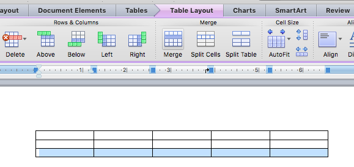

Please read the directions. There were directions listed on how to fill out the Useful Application, How to Calculate, and Why is it a Vector? sections. Use the directions and examples given to help fill out these sections.
Many students also had completed sections that were not required.
It is unacceptable to submit documents that are, word for word, identical to a friends. This is not a simple homework assignment but is an essay assignment.
The sections labeled definition, equation definition, vector or scalar, and algebraic symbol can be derived from a resource and cited. But the sections labeled Useful Application, How to Calculate, and Why is it a Vector? are asking for your original ideas. Your original ideas should not be identical to another student and certainly should not be the same, word for word statements as another student.
On future submissions, your answers to these sections should not be identical to any other students. If you put significant thought and creativity into coming up with ideas, it would be extremely unlikely this would happen by chance.
The way that many students formatted the document is difficult to understand. For all future drafts, please format the document as follows.
| Quantity | Definition | Equation Definition | Algebraic Symbol | Vector or Scalar |
|---|---|---|---|---|
| Distance | ||||
|
||||
| Displacement: | ||||
|
||||
Please follow this formatting for the full document, with one table for each family.
To make a table cell that spans multiple rows in Microsoft Word, highlight the cells you want to merge and click the merge button.
To make a table cell that spans multiple rows in Google Docs, highlight the rows you want to merge and select the merge option from the dropdown menu.
This is a list of common errors made by many students.
Because this is a kinematics dictionary, the definitions should all be based on the idea of motion. Thus, your definition for distance should not be "How far apart two objects are," because this does not define distance as it relates to motion. Pick a different way to define distance that is connected to how something moves
For how to calculate distance, the formula distance = speed * time is not a general method because it applies only if speed is constant. Instead, adapt one of the problems on calculating distance we completed in class.